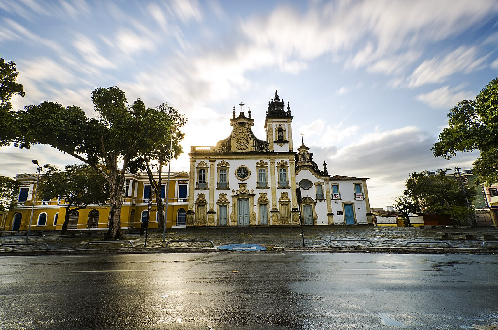

Piscinas do Seixas
Recifes, água clara e um passeio que acompanha o ritmo das marés.
Foto: MTur Destinos · domínio público
Paraíba · Brasil
Eu amo Jampa.
O primeiro sol. Uma cidade inteira.
Entre o azul do litoral e as ruas que guardam séculos de história, Jampa se revela em cada caminho, sabor e encontro.
Do banho de mar ao silêncio de uma igreja barroca: escolha o que combina com você e descubra uma cidade que nunca cabe em uma única paisagem.
Recifes, água clara e um passeio que acompanha o ritmo das marés.
Foto: MTur Destinos · domínio público

Azulejos, talha e arquitetura que atravessam gerações.
Foto: Rogerio121402 · CC BY-SA 4.0


Uma pausa no Varadouro para olhar a cidade e o rio.
Foto: Fábio de Oliveira Geber · CC BY-SA 4.0

O horizonte se abre no extremo oriental das Américas.
Foto: Marinelson Almeida · CC BY 2.0


A Lagoa, as palmeiras e a vida cotidiana do Centro.
Foto: Fabiano Caruso · CC BY-SA 2.0


Casarões coloridos e detalhes do Centro Histórico.
Foto: Rogerio121402 · CC BY-SA 4.0

Um conjunto histórico para olhar com atenção aos detalhes.
Foto: Ruy Carvalho · CC BY-SA 4.0

São 12 lugares, com fotografias reais creditadas e tratamento visual uniforme. Os dados de visitação podem mudar; confirme horários, marés e condições diretamente com os locais e operadores.
 Praia de Cabo Branco · João Pessoa
Praia de Cabo Branco · João Pessoa
João Pessoa nasceu às margens do Rio Sanhauá, no Varadouro, e cresceu entre manguezais, coqueirais, praças e praias. Hoje, a cidade combina patrimônio protegido, cultura viva e um litoral que convida a desacelerar.
As ruas do Centro Histórico guardam os capítulos de uma cidade que mudou de nome, de escala e de paisagem sem perder suas raízes.
A fundação acontece às margens do Rio Sanhauá, onde hoje está o Varadouro.
A cidade passa a ter o nome de Filipéia, em homenagem ao rei Filipe II.
Após o período neerlandês, a cidade volta a se chamar Parahyba do Norte.
O nome atual homenageia o político paraibano João Pessoa Cavalcanti de Albuquerque.
Linha do tempo baseada no Turismo João Pessoa. O Centro Histórico foi tombado pelo Iphan em 2009; veja o registro do patrimônio material.
Uma sugestão para começar a explorar. Ajuste o ritmo à maré, ao clima e aos horários atualizados de cada atração.
Escolha uma duração e veja um caminho possível entre mar, patrimônio e cultura.
Guarde este começo, escolha seu próximo passeio e descubra João Pessoa para além do primeiro olhar.
Voltar ao início ↑